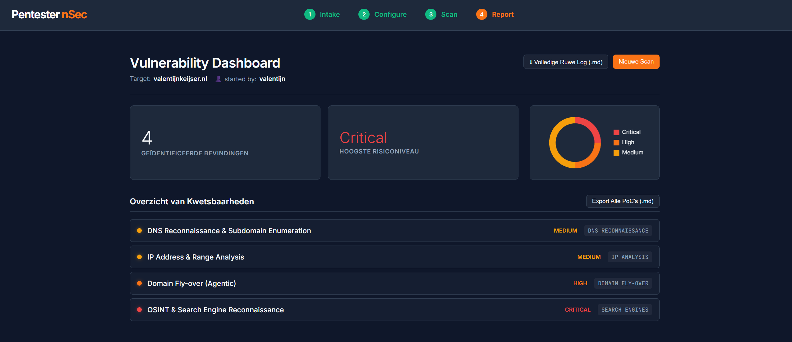
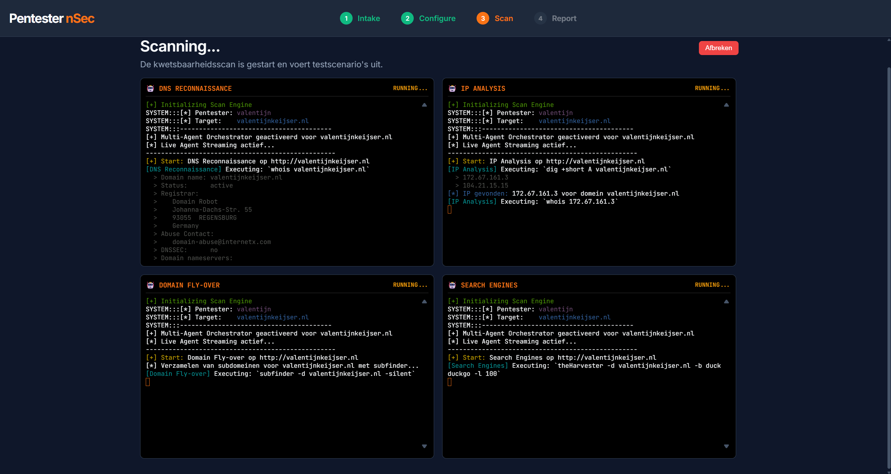
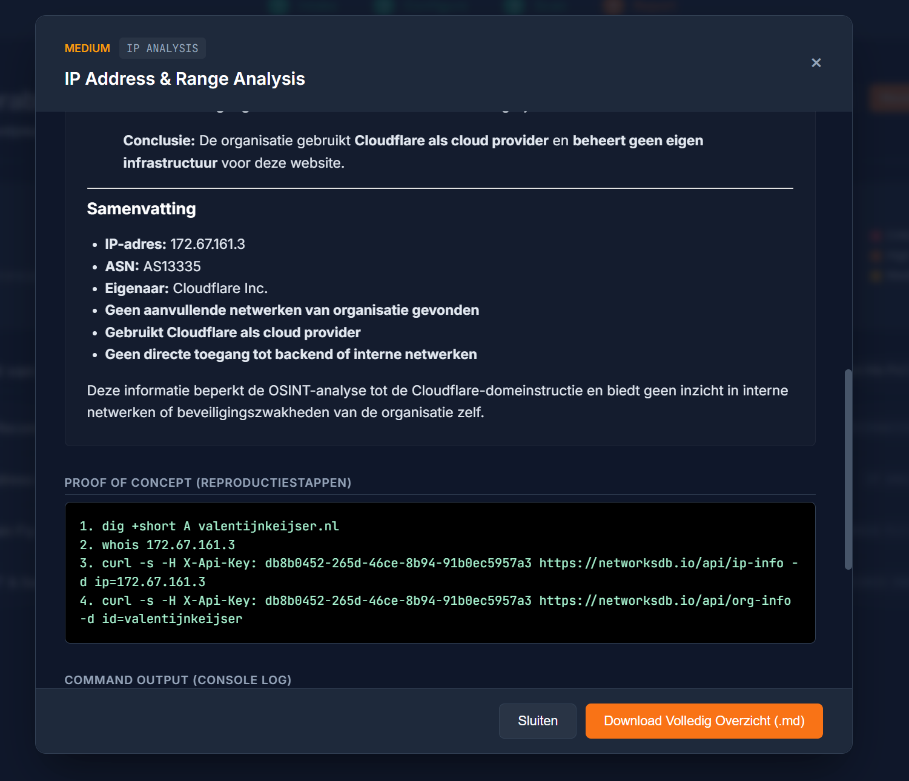

An end-to-end, multi-agent penetration testing framework that combines traditional security tools with the reasoning power of Artificial Intelligence.

A comprehensive penetration test involves a massive amount of manual overhead. Before a single scan is even launched, security engineers have to parse intake notes to determine the exact scope, targets, and credentials. During the test itself, recurring tasks across the kill chain, from reconnaissance to vulnerability analysis (like checking for XSS, SQLi, and CSRF), require juggling multiple tools. These tools often generate huge amounts of noise or crash on large datasets, requiring tedious manual triage.
I built an autonomous orchestrator where "AI Agents" manage the entire workflow. The process starts at the very beginning: the tool uses a local Large Language Model (Ollama) to parse raw client intake notes and automatically extracts a strict JSON configuration, determining target URLs, in-scope paths, and required authentication flows.
Once the scope is set, the asynchronous Python backend triggers a fleet of specialized agents. These agents work concurrently to execute OSINT, DNS Reconnaissance, IP Analysis, and Web Vulnerability Scanning.

A prime example of this smart automation is the Domain Fly-over Agent. It collects subdomains using Subfinder, but instead of blindly scanning everything, the agent sends the raw data to the AI model. The AI autonomously reasons which targets are most critical (e.g., admin panels or dev environments) and dynamically adjusts the scanning profile to prevent tool crashes. Afterwards, tools like Aquatone are triggered for targeted visual inspection.
The backend is built with FastAPI and leverages asyncio to run heavy, concurrent OS-level tasks. Log output from every agent is streamed live to the frontend via an asynchronous queue system, providing real-time visibility into the pentest.
To ensure reliability and scalability across different environments, I containerized the entire project using Docker. The base image is built on Kali Linux Rolling, tightly integrating essential hacking tools (such as Nmap, Amass, Aquatone) directly into the Python orchestrator.

This project demonstrates my ability to build complex asynchronous systems, integrate AI models locally, set up robust infrastructure (Docker/Linux), and think out-of-the-box when automating the workflow of an Ethical Hacker.